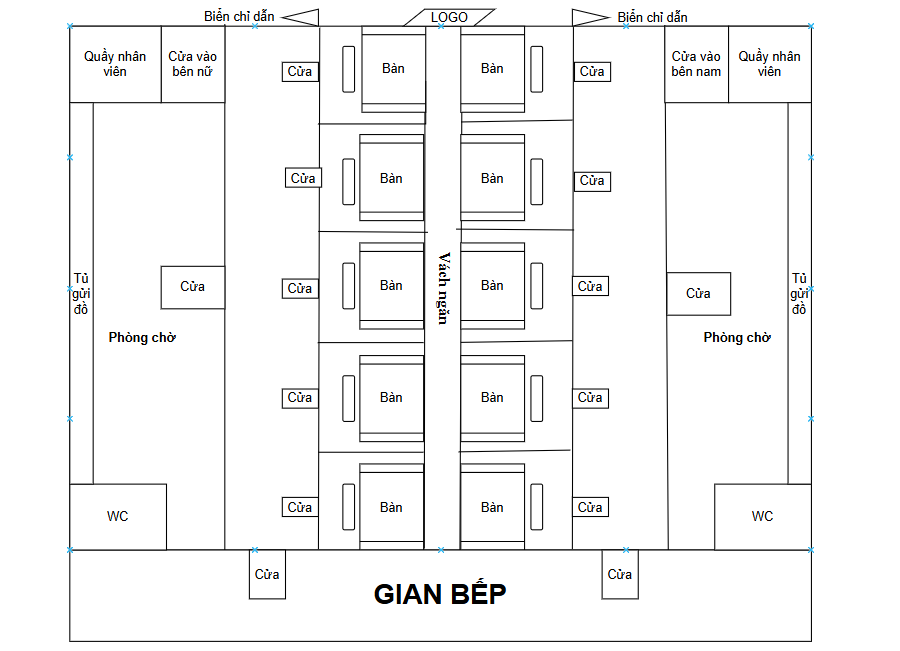

Về không gian quán
Không gian mở, nhã nhặn và đậm chất gặp gỡ. Bàn ăn được thiết kế theo mô hình ghép đôi, tạo cảm giác mới mẻ nhưng vẫn riêng tư.
- Phòng bàn sáng tạo, dễ trò chuyện.
- Đặt phiếu với yêu cầu cá nhân.
- Admin duyệt và ghép nối tự động dựa trên đặc điểm chung.
Quy trình đặt phiếu
Bạn đặt phiếu với ngày giờ và yêu cầu về đối phương. Admin sẽ duyệt và ghép nối với phiếu khác nếu phù hợp. Khi ghép thành công, tiến hành đặt cọc qua chuyển khoản.
- Trạng thái phiếu: Hủy, Đang chờ, Ghép thành công, Đặt cọc thành công.
- Khách ghép không nhìn thấy tên, số điện thoại, email.
- Hồ sơ cá nhân có thể cập nhật trực tiếp sau khi đăng nhập.
Sơ đồ mô hình quán
Mô hình thiết kế quán ăn
